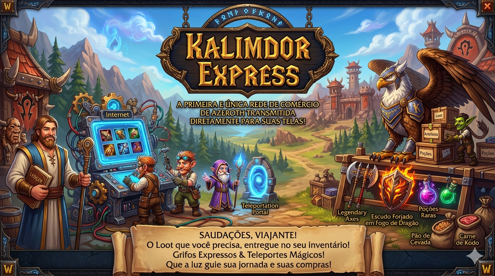

Cansado de depender da sorte nos drops ou de passar horas na Casa de Leilões? Suas raides só terminam em wipe? O Kalimdor Express resolve o seu problema! Trazemos as melhores armas, escudos, pergaminhos e montarias direto de Azeroth e entregamos pelos correios. Esqueça o farm, compre direto na fonte!
Você deve estar se perguntando: como um mercador de Azeroth conseguiu abrir uma loja na sua "Internet"? Graças a uma mistura um tanto instável de Engenharia Gnomênica e feitiços de Dalaran, nós quebramos a barreira entre os mundos! Estamos aqui para equipar aventureiros da vida real com os artefatos mais cobiçados dos Reinos do Leste, Kalimdor e além.